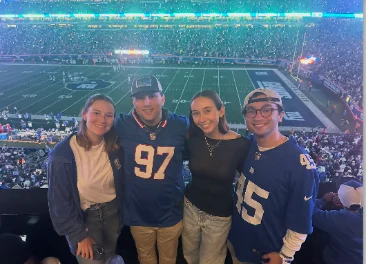

Cole Sherman
working my way out of the Dunning-Kruger valley
i'm an iOS & fullstack engineer shipping product to billions of users. right now I'm working on TikTok Subscriptions: the features people pay for, and the payment and entitlement systems on the client. i've also led performance and architecture initiatives that make the business more money. sometimes I build side projects where I write the client, the backend, and everything in between.
when I'm away from the computer, you can find me skiing, adding to my slowly outgrowing record shelf, watching & playing sports, or doing the New York Times crossword.

- Software Engineer, TikTok january 2025 to present first "big boy job" after graduating WashU in may 2024 and taking some time off. shipping features for the Subscriptions product, leading & landing performance optimization projects, and ensuring stability for a $XXm/quarter (and growing) business through robust A/B testing, event monitoring, and code review. swift • typescript • objective-c • swiftui • uikit • react • bazel • git
- Mobile (iOS) Engineer Intern, Spotify summer 2023 worked on the profile team shipping features to increase inter-user engagement and profile traffic. shipped profile sharing functionality to 100% of users, wrote backend service to return shared user Blends, contributed to general bugfixes & upkeep swift • java • uikit • bazel • unit testing • snapshot testing • git
- iOS Intern, EyeLabs.AI winter through spring 2023 designed & implemented custom UI components and user-friendly search flow for the IOL Reference iOS app, allowing optical surgeons to quickly search for FDA-approved, currently marketed intraocular lenses that meet their needs and specifications. optimized data storage strategy to significantly reduce db size and ensure seamless client integration swift • swiftui • firebase • git
- DoubleDown, TestFlight february 2026 to april 2026 real-time multiplayer blackjack and a training mode to drill basic strategy, card counting, and test it out against ai oppponents. swift • swiftui • typescript • express • postgresql • redis • docker
- Sunday Scaries, GitHub august 2026 to present solving the problem of being involved in too many fantasy leagues one ios app at a time. swift • swiftui • widgetkit • keychain • background tasks
- FantasyKit, GitHub august 2026 to present the package underneath sunday scaries. aggregating fantasy football data across platforms and making sure they all agree. swift 6 • structured concurrency • urlsession • swift testing • spm